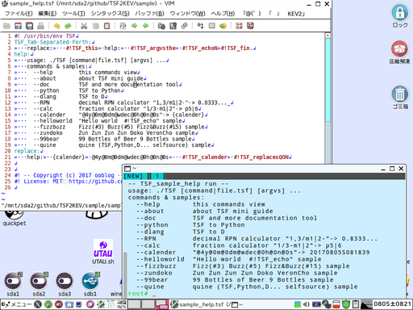

「TSF2KEV」はプログラミング言語「TSF_Tab-Separated-Forth」のD言語とPythonによる実装です。
version(branch):20170528U134416 modify:20170618U182444(執筆途中です)
⓪-2．インストール/アンインストール＆セットアップ
gitでリポジトリ「https://github.com/ooblog/TSF2KEV.git」を「Clone」するか、
「https://github.com/ooblog/TSF2KEV/archive/master.zip」を「Download ZIP」して展開すると、
「TSF2KEV」フォルダが作成されます。
- プログラミング言語「TSF_Tab-Separated-Forth」開発中。
- https://github.com/ooblog/TSF2KEV
VimでTSFを編集する場合は「vimsyntax/tsf.vim」を「~/.vim/syntax/tsf.vim」にコピー。
VimでKEVを用いた漢直入力などをする場合は「メニュー→編集(E)→起動時の設定(S)」で「~/.vimrc」を開いて「filetype=tsf」や「:!TSF %」を追記。
syntax on
au BufRead,BufNewFile *.tsf set filetype=tsf
autocmd BufNewFile,BufRead *.tsf nnoremap <F5> :!TSF %<CR>
command KEV2tsf :source ~/TSF2KEV/KEV2/kanedit.vim
Vimエディタでの設定が成功するとシンタックスが着色されるはずです。

D言語の環境が用意できる場合「TSF_DMDcompile.sh」のように「TSF」の実行バイナリがコンパイルできます。
dmd TSF.d TSF_Io.d TSF_Forth.d TSF_Shuffle.d TSF_Calc.d TSF_Time.d TSF_Urlpath.d TSF_Match.d TSF_Trans.d
実行バイナリ「TSF」を環境変数「$PATH」が通るフォルダ(例えばPuppyLinuxの場合「/root/my-applications/bin/TSF」など)にコピーするとLinuxの場合「*.tsf」が実行できるようになるはずです。
- env - Wikipedia
- https://ja.wikipedia.org/wiki/Env
- シバン (Unix) - Wikipedia
- https://ja.wikipedia.org/wiki/%E3%82%B7%E3%83%90%E3%83%B3_(Unix)
⓪-3．その他現在わかっている不具合や今後の課題などソフト使用の補足ガイドライン
未実装の#関数カードや#関数カード内の未実装な機能などが存在します。
- 「#TSF_calender」でISO週番号や徹夜日時などが未実装。「TSF_Time」モジュールでタイマー系が未実装。
- 「TSF_Calc」モジュールで分数の小数変換機能細かい版が未実装(RPN経由で高速に近似を求める事は可能)。
- 「TSF_Shuffle」モジュールPPPP関連で「C」「V」「A」「Q」「I」「R」「H」「L」副詞が未実装。
- 「TSF_Match」モジュールで「C」「V」「R」副詞が未実装。「count」動詞が未実装。
言語仕様が固まってない＆特にTSF_Matchモジュールで愚直にすべての関数を作ると時間がかかりすぎる＆kan5x5.woffフォントも未完成。なので、フレーバーテキスト風に#関数カードの仕様が書かれたカード画像を数を揃えて用意する演出は頓挫。
①-1．TSF構文には括弧が存在しません(式では括弧が使えます)。
 TSF構文で用いる記号はタブ文字「\t」による区切りと「#!」によるコメントと、スタック名末尾「:」と関数カード先頭の「#」ぐらいです。
TSF構文で用いる記号はタブ文字「\t」による区切りと「#!」によるコメントと、スタック名末尾「:」と関数カード先頭の「#」ぐらいです。
- 「\t(tab)」
- カード(文字列)はタブ文字で区切るので、タブ文字を視認しやすいエディタを用いてください。
- 「#!(shebang)」
- インタプリタ指定「#! /usr/bin/env TSF」を成立させるためにシバン「#!」で始まる行はコメント扱いにして読み飛ばします。
- 「:(coron)」
- スタック名に必須ではありませんが「#TSF_calc」内でスタック名を扱う際に必要。あとLTSVを読み込む「L」副詞で用いる予定。
- 「#(sharp)」
- 関数カード名にシャープは必須ではありませんが視認性の関係(スタック名との区別)でTSFの関数には頭にシャープ(ハッシュ)を付けてます。
行頭がシバン「#!」の場合はコメント扱いです。
行頭がタブ文字「\t」の場合はスタックを構成するカード束です。
行頭がタブ文字「\t」でもシバン「#!」でもない場合はスタック名の宣言です。スタック名宣言とスタック構成カード束とをまとまて一行で記述(ワンライナー)する事も可能です。
行頭がシャープ「#」すなわちシャープ付きのスタック名は非推奨ですが、漢直関連でシャープ一文字のスタック名「#」を必要とするので禁止はされてません(#関数カードとの衝突には注意)。
つまりコメントを除くとTSF構文にはタブ区切りと改行しか存在しないので、構文としての括弧はありません。
TSF構文そのものに括弧はありませんが、#関数カード「#TSF_calc」内の演算で括弧が使えます(「#TSF_RPN」はRPNなので括弧を使いません)。
①-2．TSFには変数の型どころか代入したり束縛したりするような変数自体が存在しません。
TSFは文字列リストを格納する連想配列(デッキ)でメモリを管理する形になるので、整数も小数も分数もbool値も文字列(カード)になります。
#関数カード(「#TSF_calc」「#TSF_RPN」など)の演算結果をthatスタックに積み上げるそれを変数に代入と呼ぶかは微妙です。
「#TSF_calc」でスタックをリスト(配列)に見立てる場合には「#TSF_join[]」を経由せずに式に組み込む事は可能です。
スタックを変数に「喩える」ならば、全てがグローバル変数みたいなものなので、衝突のデメリットとどこからでも呼び出せるメリットがあります。
いわゆるenumやconstやimmutableに該当する束縛系の機能もない(なぜなら変数が存在しない)ので、スタック名の衝突には注意。
①-3．TSFには関数の返り値やreturn文が存在しません。return用にタプルを用意するなどの概念もありません。
複数の値を受けとるために構造体やタプル型やクラスなどを用意する必要はありません。変数が存在しないように関数にも帰り値が存在しません。
#関数カードやスタックは値を文字列カードとしてthatスタックに積む(場合がある)だけです(便宜上「リターン」と呼称します)。
①-4．TSFにはtry/catch文が存在しません。ゼロで割った場合などの時は「n|0」が発生します。
関数に帰り値が無いのだから、関数内でエラーが発生した場合エラーコードがthatスタックに積まれるのかと言えば、そんな事もありません。
TSFの実装ミスか何かでD言語やPythonレベルのエラーは起こりうると思いますが、TSFの#関数カード自体にエラーコードの概念は基本的にはありません。
例えば「#TSF_readtext」でファイルの読込に失敗しても、文字列長0のファイルを読み込んだ扱いになります。
「#TSF_calc」や「#TSF_RPN」でゼロで割るような事が発生した場合、「n|0」が「リターン」されるだけです。「n|0」の解釈は#関数カード毎の判断によります。
例えば「n|0」を「#TSF_echoN」に渡す場合、0行出力の扱いになりますが、「n|0」をゼロとみなしてるのではなく「数値ではない」と判断された流れです。
thisスタックを数え終わるまたはスタック破棄および「#TSF_countmax」で指定した上限(初期値256)などのオーバーフロー発生は単にスタックの終了扱いになるのでスタックを抜けます。
存在しないスタックのpeekや0枚スタックへのpullその他「ドロー」などのアンダーフローでも長さ0の文字列を受けとるだけでエラーは回避されるはずです。
つまり、プログラムが止まるような構文エラーや演算エラーそのものが発生しない以上、catchする事ができないのでcatch構文もありません。
①-5．TSFにはfor文やwhile文が無いので再帰がループです。
thisスタック(実行中)のスタック自身を呼ぶ場合はコールスタックに積まずに再度実行されるので、末尾再帰ループとなります。
同様にコールスタックに存在するスタック名を呼び出すとその階層までのスタック名が破棄されます(同名スタックはコールスタックに積まない)のでループとなります。
TSFではコールスタックを直接編集する#関数カードはありません。ループ(再帰)を用いる場合は脱出用の分岐「#exit:」等もセットで用意してください。
①-6．TSFにはif/else文やswitch/case文が無いので分岐は式(比較演算子)などを用います。
単純な分岐なら「0Z~True:~False: #TSF_calc #TSF_this」のような感じで「#TSF_calc」の比較演算子の計算結果にスタック名を選択する荒技があります(「#TSF_RPN」では使用不可)。
case文の真似をする場合「switch cases: funcs: #TSF_casesQON #TSF_this」のような感じで「#TSF_casesQON」などを用いてスタック名を選択する方法もあります。
他にも「funcs: [cases:0] #TSF_calc #TSF_peekMthe #TSF_this」のような感じでpeek系の関数を用いてスタック名を選択する方法もあります。
①-7．スタック代名詞4つの「th」、this,that,the,theyとハウリングについて。
- thisスタック(実行中スタック)
-
「this」は実行中のスタック。#関数カードであればthatスタックからカードを「ドロー(積み下ろし)」してthatスタックに「リターン(積み上げ)」したりする。
文字列カードであれば単純にthatスタックに積み上げる。
thisスタックを数え終わる、もしくは途中でthisスタック目減りなど「オーバーフロー」が発生したらスタックから抜ける。
「#exit: #TSF_this」のように存在しないスタックに入る行為でもオーバーフロー扱い。
- thatスタック(積込先スタック)
-
「that」は積込先スタック。#関数カードの返り値などが積み上げられる。
thisスタックとthatスタックが同じ場合、文字列カードが無限に積み重なる状況が発生する場合があり、それは「ハウリング」と呼称します。
ハウリング対策でthisスタック数え上げ上限を「#TSF_countmax」で指定できます。初期値は256です。
- theスタック(指定スタック)
-
「the」は指定スタック。#関数カードで特定のスタックを指定する場合の代名詞(theは厳密には冠詞だが便宜上代名詞扱い)。
- theyスタック(スタック名一覧)
-
「they」はスタック名一覧。「デッキ」のスタック名一覧自体をカード束としてスタックの様に扱う場合がある。
「#TSF_pullNthey」などでスタックの消去。
①-8．カードシャッフル動詞4つの「p」、peek,poke,pull,pushとドロー＆リターンについて。
- peek
-
- poke
-
- pull
-
- push
-
①-9．カード選択位置の副詞「FNCMVAQIRHL」と多重副詞「SDO」ついて。
②-0．「TSF.d」「TSF.py」のAPI一覧(コマンド一覧含む)。
- TSF_sample_help()
- 「sample_help.tsf」コマンド版「TSF --help」。
ファイル名などのパラメーターが無い場合にもコマンド一覧が表示される。
- TSF_sample_Helloworld()
- 「sample_helloworld.tsf」コマンド版「TSF --helloworld」。
「"Hello world #TSF_echo」のみ。「#TSF_fin.」の省略テストも兼用。
- TSF_sample_TSFdoc()
- 「TSFdoc.tsf」コマンド版。
- TSF_sample_about()
- 「sample_aboutTSF.tsf」コマンド版。
- TSF_sample_RPN()
- 「sample_RPN.tsf」コマンド版。
- TSF_sample_calc()
- 「sample_calc.tsf」コマンド版。
- TSF_sample_calcJA()
- 「sample_calcJA.tsf」コマンド版。
- TSF_sample_calender()
- 「sample_calender.tsf」コマンド版。
- TSF_sample_FizzBuzz()
- 「sample_fizzbuzz.tsf」コマンド版。
- TSF_sample_99beer()
- 「sample_99beer.tsf」コマンド版。
- TSF_sample_quine()
- 「sample_quine.tsf」コマンド版。
⑪-0．「TSF」のＦＡＱ。
-
Ｑ．ローカル変数とか無いのですか？
-
Ａ．そもそもTSFに変数はありませんが、強いて喩えるなら全てグローバル変数みたいなものなので、その場しのぎのネーミングは衝突の恐れです。
もう少し喩えるなら他のプログラミング言語でも関数名の衝突には気を付けるはずです。TSFでは関数と変数の区別も無いので、マージしたスクリプトから変数を直接呼び出せるメリットと衝突のデメリットが存在します。
 ForthやTSVのおさらいはwikipediaなどを軽く参考にしてください。
ForthやTSVのおさらいはwikipediaなどを軽く参考にしてください。